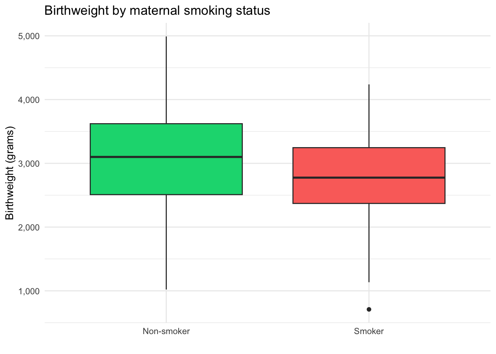

Step 4. Modelling relationships
Use statistical modelling to gain health insights
Overview
Statistical modelling is the cornerstone of evidence-based decision-making in healthcare. By crunching numbers and analysing patterns, we gain insights into disease trends, treatment effectiveness, and the factors influencing health outcomes. It’s like having a powerful magnifying glass that allows us to zoom in on the crucial details within a vast dataset.
Our exploratory data analysis has already gone some way to answering our first question What is the relationship between smoking during pregnancy and a child’s birthweight? It looks like children born to mums who smoked during pregnancy have, on average, a lower birthweight compared to children born to non-smokers.
It looks like children born to mums who smoked during pregnancy have, on average, a lower birthweight compared to children born to non-smokers.
But can we be sure this is the right interpretation? Is the difference meaningful or could it just be noise in the data or random chance?
To answer these questions we can use linear regression—the workhorse of statistical modeling. At its core, linear regression helps us explore the linear relationship between a dependent variable and one or more independent variables. Suppose we’re examining the impact of factors like maternal age, smoking, and hypertension on birthweight. Linear regression enables us to quantify these relationships, providing us with coefficients that represent the strength and direction of each influence. It’s like having a mathematical roadmap to understand how changes in one variable correlate with changes in another.

Below is the code to fit a linear model in R using the lm() function. Note that we specify the outcome variable birthweight (or bwt), the explanatory variable smoke, and the dataset birthwt.
model1 <- lm(bwt ~ smoke, data = birthwt)And here are the model results, presented in a table.
| Birthweight | |||
| Predictors | Estimates | CI | p |
| Baseline | 3056 | 2924 – 3188 | <0.001 |
| Smokers | -284 | -495 – -73 | 0.009 |
| Observations | 189 | ||
We can interpret this as follows:
- The baseline coefficient is 3,056. In this case, the baseline refers to children born to non-smokers, and the estimate tells us that these children weighted 3,056 grams on average.
- The 95% confidence interval (CI) for this estimate ranges from 2,924 grams to 3,188 grams. This provides a sense of how certain we are about the estimate of 3,056 grams. If we were to repeat the study or experiment many times and calculate the CI each time, we would expect the true value of the coefficient to fall within the range of 2,924–3,188 for about 95% of those repetitions.
- The coefficient for smokers is -284. This tells us that, on average, babies born to smoking mums were 284 grams lighter than babies born to non-smokers.
- The 95% confidence interval (CI) for this estimate ranges from -495 grams to -73 grams.
Studying Health Data Science at UNSW Sydney
Learn the fundamentals of statistical modelling in the course HDAT9600 Statistical Modelling I
Push your skills further to model complex health data structures in HDAT9700 Statistical Modelling II.
These results confirm that there is a statistically significant association between maternal smoking and birthweight. Children of mothers who smoked during pregnancy are born with a lower birthweight compared to children of mothers who did not smoke, on average. The estimated difference is 284 grams lighter on average but—based on the observed data—it could be as much as 495 grams lighter on average or as little as 73 grams lighter on average (or even more, or less, but that would be very, very unlikely).
Incorporating knowledge of underlying biological and social processes into statistical analyses is an essential step in teasing apart causation from mere correlation. Often this knowledge is summarised in the form a Directed Acyclic Graph (DAG). Some of the MSc HDS course instructors have developed an R software package and web application to help improve your understanding of these concepts.
Importantly, this result by itself does not necessarily mean that the observed differences are caused directly by smoking. It could be that mothers who smoked have very different characteristics compared to mothers who did not smoke. For example, perhaps smoking mums disproportionately came from disadvantaged backgrounds with higher barriers to receive antenatal care and it is that difference that explains the differences in birthweight rather than smoking alone. Advanced analytical methods can help us to distinguish causation from mere correlation.
Test your understanding
Test your understanding by answering these questions based on the model output above
Fill in the blank Children of mothers who smoked during pregnancy were on average grams lighter compared to children of mothers who did not smoke during pregnancy.
True or False The 95% confidence interval for the coefficient for maternal smoking includes 0
Choose the correct answer There is a association between maternal smoking and birthweight.
 Back to the main menu
Back to the main menu  Step 5. Predicting outcomes
Step 5. Predicting outcomes